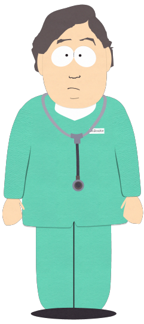
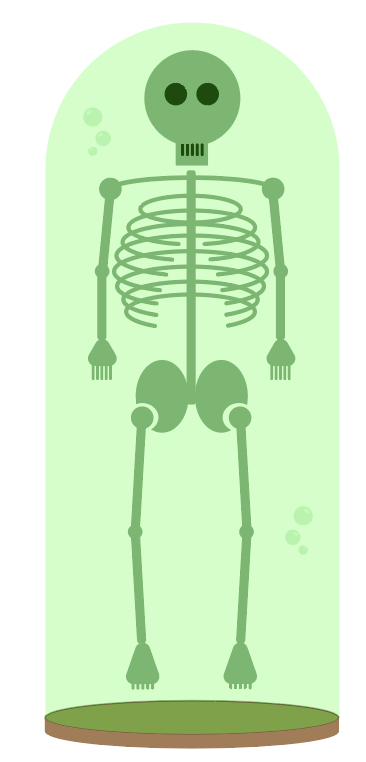
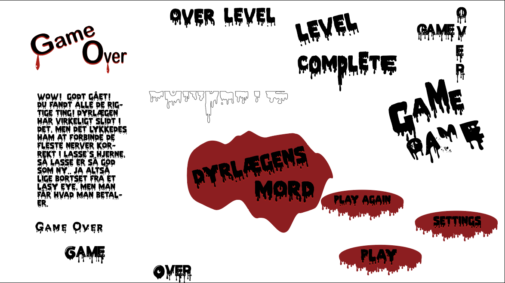
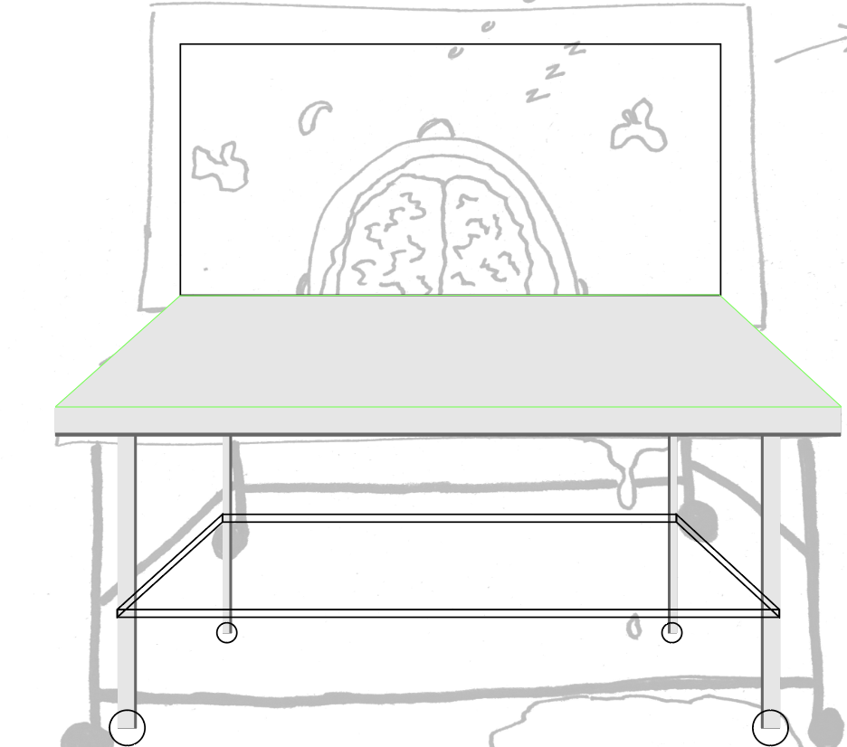
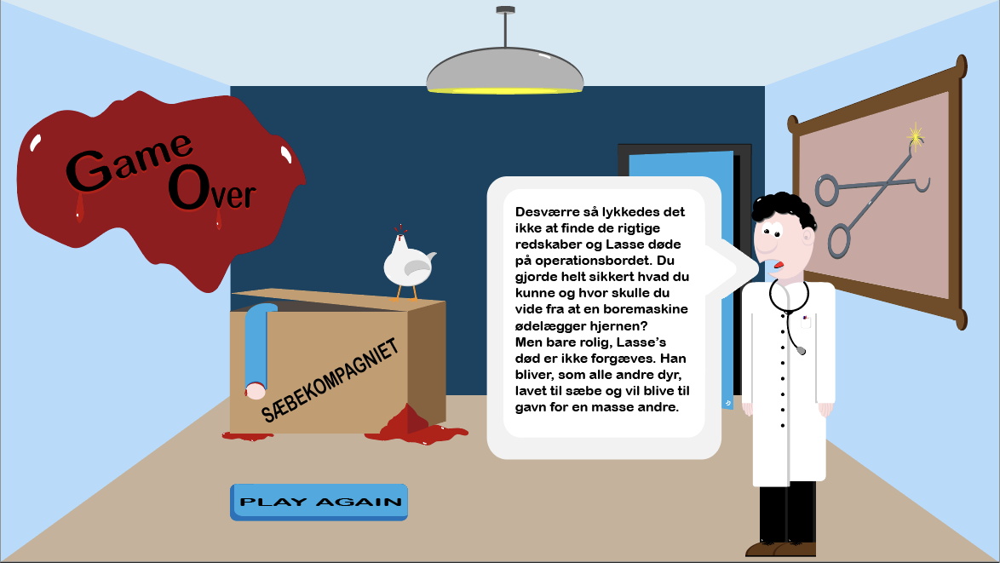

CV
Velkommen til min side
Dyrlægens Mord
Herover ses en video, hvor du bliver taget gennem spillet
Link til spil:
Dyrlægens MordInspiration og opbygning
Selve spillets design er inspireret af South Park og Flat Design.
Alle figurer er opbygget primært via gemoetriske former, lagt på billeder




Opbygning af Lasse


Opbygning af de klikbare elementer i spillet




Opbygning af fonte og UI-elementer


Opbygning af spillescene

Oprindelige slutskærm
